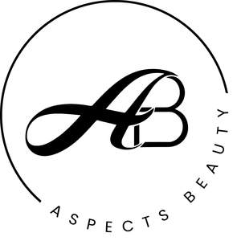

Trade Mark Journal No.2025/016 18 April 2025
UK00004176183 19 March 2025 (3,4,35,38,39,41)

- Class 3
- After-shave lotions; agarwood [incense]; air fragrance reed diffusers; almond milk for cosmetic purposes; almond oil for cosmetic purposes; amber [perfume]; antiperspirant soap; antiperspirants [toiletries]; aromatics [essential oils]; balms, other than for medical purposes; beauty masks; bergamot oil; body glitter; body paint for cosmetic purposes; cooling sprays for cosmetic purposes; cosmetic creams; cosmetic pencils; cosmetic preparations for eyelashes; cosmetic preparations for skin care; cosmetics; deodorant soap; deodorants for human beings or animals; eau de Cologne; essential oil-based creams for aromatherapy use; essential oils / ethereal oils; essential oils for aromatherapy use; essential oils of cedarwood; essential oils of citron; essential oils of lemon; ethereal essences; extracts of flowers [perfumes]; eyebrow cosmetics; eyebrow pencils; fumigation preparations [perfumes]; hair lotions; hair spray; incense; ionone [perfumery]; jasmine oil; lavender oil; lavender water; lipglosses; lipsticks; lotions for cosmetic purposes; make-up; make-up palettes containing cosmetics; make-up powder; make-up preparations; mascara; mint essence [essential oil]; mint for perfumery; musk [perfumery]; oils for cosmetic purposes; oils for perfumes and scents; perfumery; perfumes; pomades for cosmetic purposes; serums for cosmetic purposes; sheet masks for cosmetic purposes; skin hydrators for cosmetic purposes; toilet water; toners for cosmetic purposes; sunscreen; sunblock; suncare lotions, after-sun lotions; cosmetics for protecting the skin from sunburn.
- Class 4
- Candles/tapers; Christmas tree candles; nightlights [candles]; perfumed candles; soy candles; wicks for candles.
- Class 35
- Administrative processing of purchase orders; advertising / publicity; advertising agency services / publicity agency services; public relations services; media relations services; advertising services to create brand identity for others; brand strategy services; brand positioning services; arranging and conducting of commercial events; consumer profiling for commercial or marketing purposes; development of marketing concepts; direct mail advertising; dissemination of advertising matter; distribution of samples; influencer marketing; market studies; marketing; marketing research; visual merchandising; product merchandising; preparing promotional and merchandising material for others; Retail shop window display arrangement services; Dissemination of advertising, marketing and publicity materials; media relations services; online advertising on a computer network; presentation of goods on communication media, for retail purposes; promotion of goods through influencers; providing business information; providing business information via a website; providing commercial and business contact information; provision of an online marketplace for buyers and sellers of goods and services; sales promotion for others; retail services in relation to fragrance products; retail services in relation to beauty products; Online retail store services relating to cosmetic and beauty products; Online retail store services relating to fragrance products; Business management of wholesale and retail outlets.
- Class 38
- Digital communications services.
- Class 39
- Distribution services; distribution of fragrance products; distribution of beauty products.
- Class 41
- Training services relating to retail marketing.
ASPECTS BEAUTY COMPANY LIMITED
Representative: Stevens & Bolton LLP